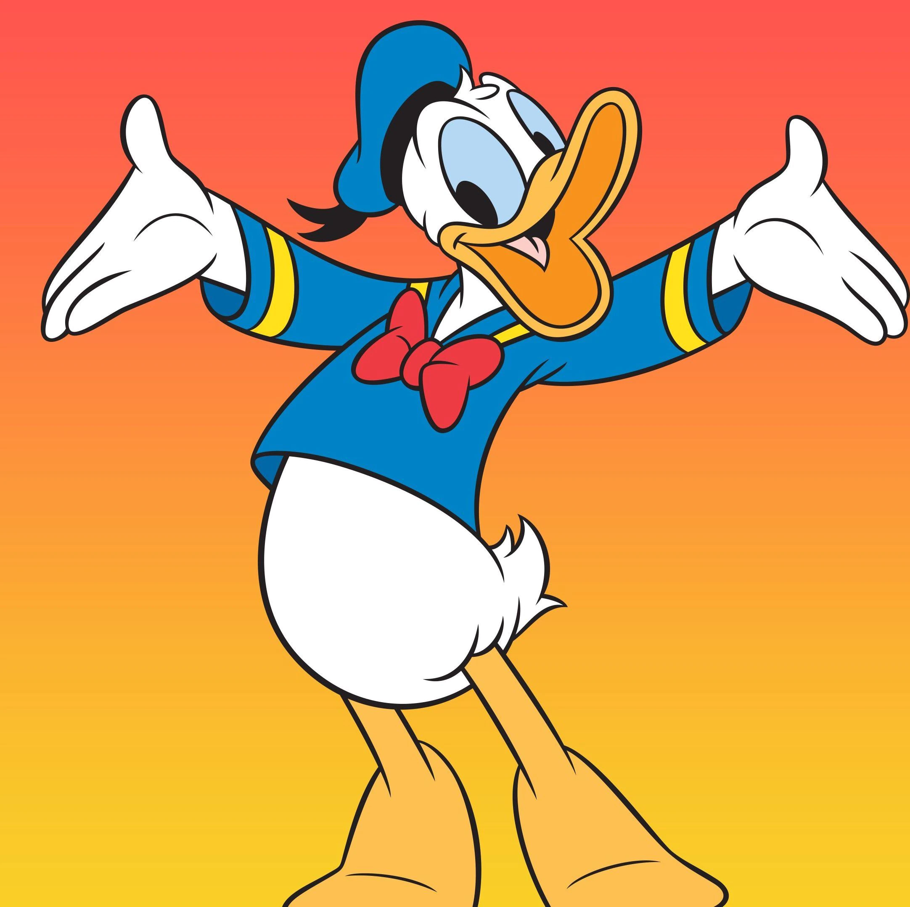

Donald
 O pato Donald é um personagem de desenhos animados e histórias em quadrinho dos estúdios da Walt Disney, por esse motivo ele na maioria da vezes sempre está presente em desenhos animados do estúdio, principalmente quando tem a presença do Mickey Mouse também, porém quase sempre seu papel é como antagonista. Ele é descrito como antipático, rabugento e azarado, sempre perdendo suas batalhas para o Mickey Mouse ou então para os seus sobrinhos Huguinho, Zezinho e Luisinho.
Uma característica marcante desse personagem é sua voz grasnada porém compreensível, ele conversa como humano ( características antropomórficas de vários personagens da Disney) porém de uma forma grasnada. Isso se deu por criação do ator de voz Clarence Nash.
Donald começou a ter destaque próprio quando um dos animadores da Disney ficou responsável pelo desenvolvimento dos quadrinhos resolveu substituir os personagens de uma história que originalmente era feita para ter Mickey, Pluto, Pateta e Donald por Donald e seus sobrinhos: Donald encontra o ouro dos piratas.
Filmes:
- Alô, amigos;
- Mickey, Donald, Pateta- Os tres mosqueteiros;
- Você já foi a bahia?;
- Aconteceu no Natal do Mickey;
- O príncipe eo mendigo;
- Tempo de melodia;
- Os vilões da Disney;
(...)
Animações:
- Mickey Mouse Funhouse;
- O mundo maravilhoso de Mickey Mouse;
- Ducktales: os caçadores de aventuras;
- A casa do Mickey Mouse;
- A lenda dos três caballeros
- Ok mundongo da Disney;
- Tv quack;
(...)
Curtas:
- Mickey Mouse: Um Halloween Assustador;
- Celebrando com Donald - Um Especial do Mickey Mouse;
- O Príncipe e o Mendigo;
- Ascensão e Queda do Pato Donald;
- Donald no País da Matemágica;
- Curtas do Mickey Mouse e seus Amigos;
(...)
Disponível em: Disney+.